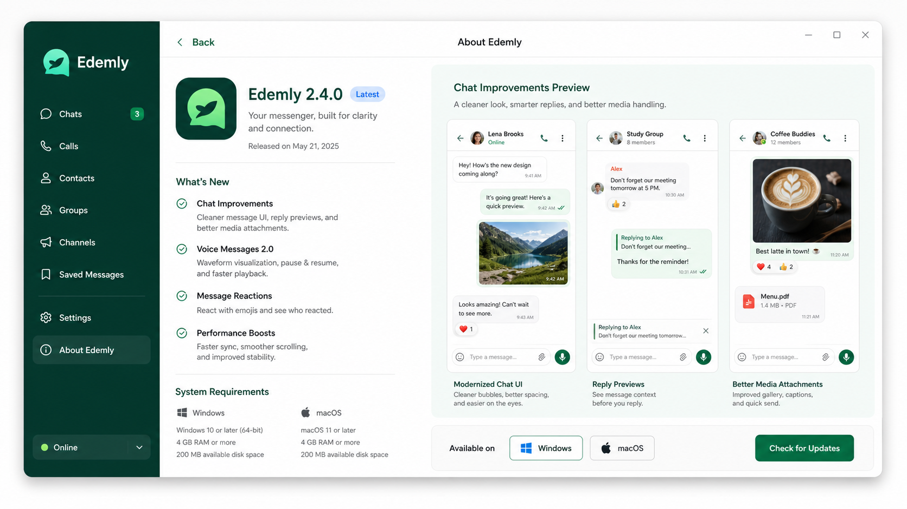

Real-time messaging
Personal and group conversations with clear presence, media, and reply context.
Desktop messenger
Edemly keeps everyday communication close to the context around it: people, teams, files, decisions, reminders, and release-ready desktop updates.
Edemly is built around the idea that messages should not float away from their context. A conversation can lead to a task, a note, a file, a call, or a workspace decision without forcing people to jump between unrelated tools.
The current local release is Windows-first, but the site and release catalog are prepared for more platforms as packages become available.
Personal and group conversations with clear presence, media, and reply context.
Use voice when text is too slow, while keeping the chat context nearby.
Keep useful details attached to people and conversations instead of scattered elsewhere.
Separate personal chats from company spaces and project groups.
Windows releases are served through static metadata and update feeds for local testing.
The release catalog already has room for Windows, macOS, and Linux packages.
Product preview
The current visual assets are mockups for checking layout. Later, the same slots can use real screenshots, short videos, and release-specific media from the JSON catalog.

Windows is available now. The catalog keeps future platforms visible without pretending downloads exist.
Loading platforms...